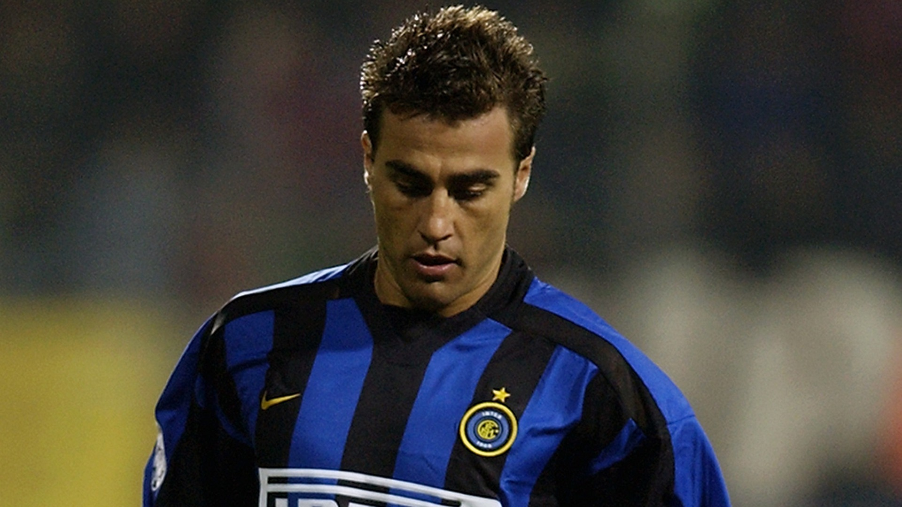

Fabio Cannavaro (ur. 13 września 1973 w Neapolu) – włoski trener i piłkarz grający na pozycji obrońcy. Zdobył tytuł najlepszego piłkarza roku 2006, drugi pod względem liczby występów w reprezentacji Włoch (więcej ma tylko bramkarz, Gianluigi Buffon). Jego młodszy brat – Paolo – także był piłkarzem.